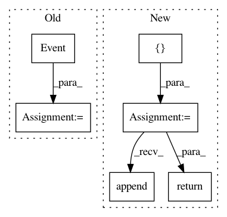

c19000b012bba5fa7ae54fadc953f5b679dead4f,featurex/extractors/video.py,DenseOpticalFlowExtractor,_extract,#DenseOpticalFlowExtractor#Any#Any#,29
Before Change
total_flow = flow.sum()
value = Value(stim, self, {"total_flow": total_flow})
event = Event(onset=f.onset, duration=f.duration, values=[value])
events.append(event)
return events
After Change
def _extract(self, stim, show=False):
flows = []
onsets = []
durations = []
for i, f in enumerate(stim):
img = f.data
img = cv2.cvtColor(img, cv2.COLOR_BGR2GRAY)
if i == 0:
last_frame = img
total_flow = 0
flow = cv2.calcOpticalFlowFarneback(
last_frame, img, 0.5, 3, 15, 3, 5, 1.2, 0)
flow = np.sqrt((flow ** 2).sum(2))
if show:
cv2.imshow("frame", flow.astype("int8"))
cv2.waitKey(1)
last_frame = img
flows.append(flow.sum())
onsets.append(f.onset)
durations.append(f.duration)
return ExtractorResult(flows, stim, self, features=["total_flow"],
onsets=onsets, durations=durations)
In pattern: SUPERPATTERN
Frequency: 3
Non-data size: 6
Instances
Project Name: tyarkoni/pliers
Commit Name: c19000b012bba5fa7ae54fadc953f5b679dead4f
Time: 2016-10-20
Author: quinten.mcnamara@gmail.com
File Name: featurex/extractors/video.py
Class Name: DenseOpticalFlowExtractor
Method Name: _extract
Project Name: tyarkoni/pliers
Commit Name: 4a1b3db27268b3a928a9f423651ecc9e5ff51196
Time: 2016-10-23
Author: quinten.mcnamara@gmail.com
File Name: featurex/extractors/audio.py
Class Name: MeanAmplitudeExtractor
Method Name: _extract
Project Name: tyarkoni/pliers
Commit Name: c6d7193747e5d189b09f4568c5442c95134e536d
Time: 2016-11-01
Author: quinten.mcnamara@gmail.com
File Name: featurex/stimuli/video.py
Class Name: VideoStim
Method Name: extract